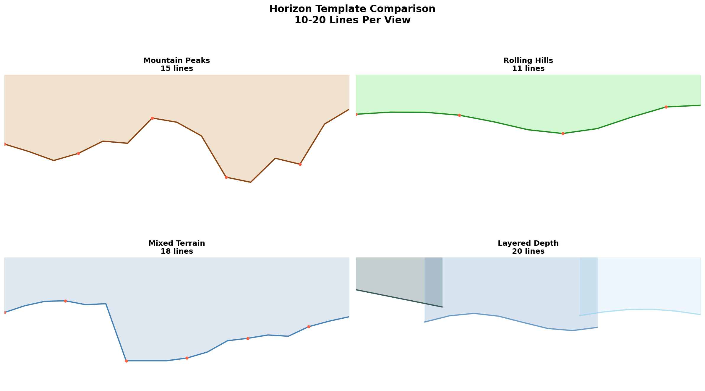
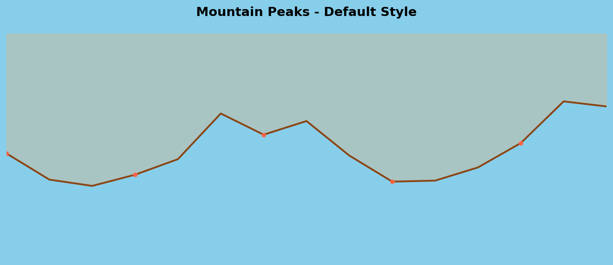
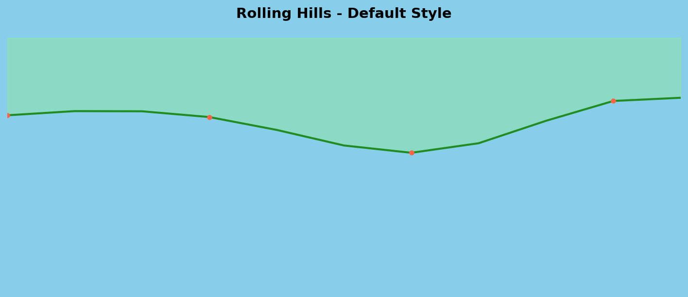
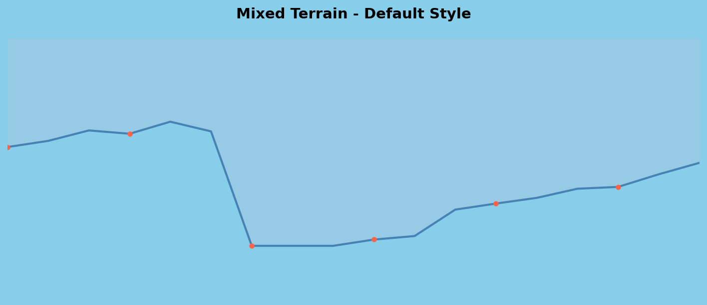

Static examples of interesting horizon visualizations using 10-20 jagged lines
🗻 Mountain Peaks
Sharp, dramatic peaks with varying heights. Demonstrates how 15 strategic lines can create compelling mountain silhouettes without overwhelming detail.
Server-side generated horizon templates using matplotlib and numpy. These demonstrate the same concepts but with Python's advanced mathematical and rendering capabilities.

Python templates will appear here after running: python3 generate_horizon_templates.py
Template Comparison
All four template types showing line count and terrain characteristics

Mountain peaks template
Mountain Peaks (Python)
15 lines with sharp elevation changes and random peak variations

Rolling hills template
Rolling Hills (Python)
11 lines using sine wave combinations for natural rolling terrain

Mixed terrain template
Mixed Terrain (Python)
18 lines combining peaks, valleys, and plateaus with mathematical precision
📊 Template Analysis & Implementation Strategy
These templates demonstrate the core philosophy: intelligent data curation over raw data flooding. Each shows how strategic line selection creates compelling visuals.
Line Economy
10-20 lines maximum per view Focus on visual impact, not data density
Smart Curation
Mine existing elevation cache Return interesting features only
Artistic Rendering
Jagged, varied silhouettes Multiple shading and style options
Depth Layering
Near/mid/far atmospheric effects Progressive opacity and detail
Next Implementation Steps:
Enhanced HorizonRenderer: Add line simplification algorithms to reduce point density
Interest Detection: Implement peak/valley detection for feature prioritization